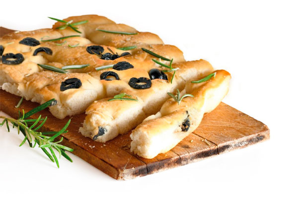

Focaccia con Aceitunas y Romero
INGREDIENTES
- 1Kg Sdeli Moments
- 1Kg Harina de media fuerza
- 0.06Kg Levadura Fresca AB Mauri
- 0.1 Kg Aceite
- 1.1L Agua
- S/C Aceitunas
- S/C Romero
PASOS A SEGUIR
Comienza amasando todos los ingredientes hasta obtener una masa de corta elasticidad. Luego, pesa las piezas según tu preferencia y deja reposar la masa durante 15 minutos. Aplasta la masa para darle la forma deseada, asegurándote de trabajarla con aceite. Después, déjala reposar durante 20 minutos. Incorpora las aceitunas y el romero a la masa y finalmente cocina las piezas según su tamaño.